Temple Album
☰
Home
Old
New
Large
Small
Home
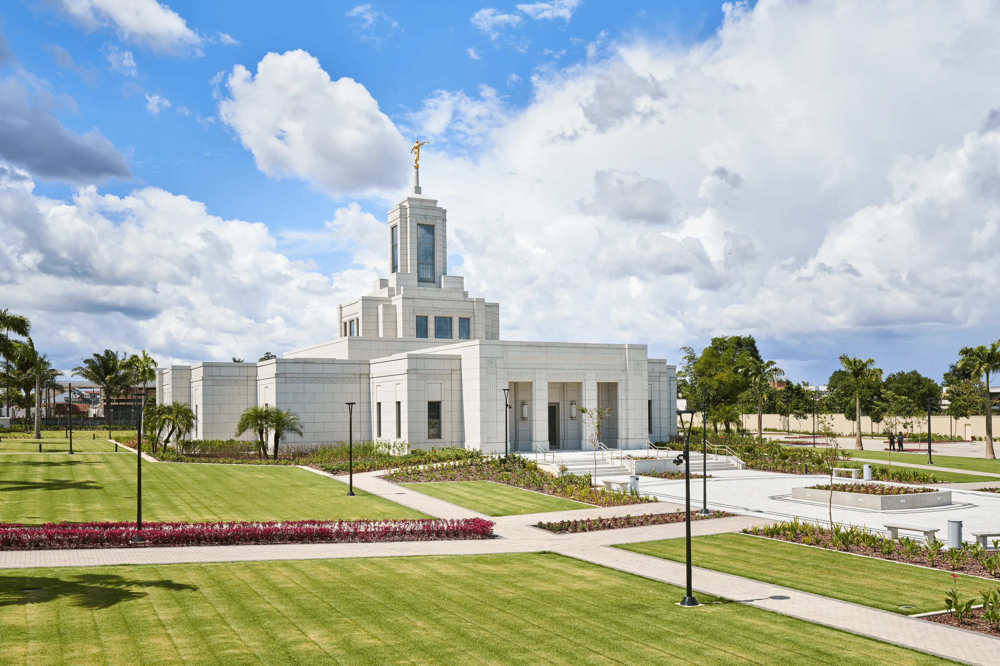
Belem temple
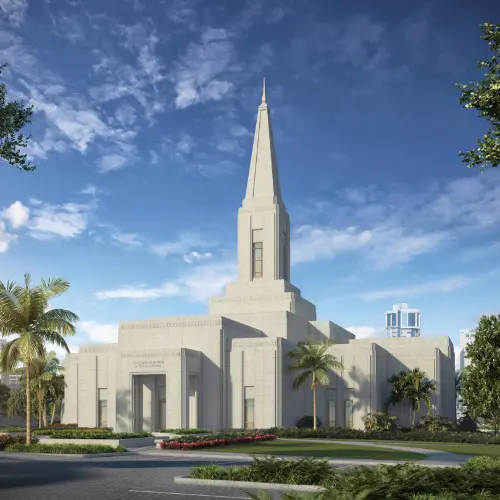
Londrina temple
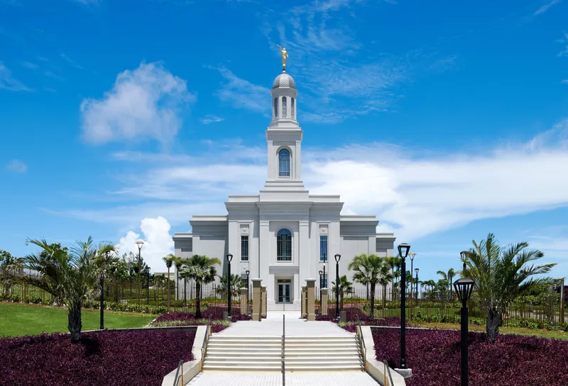
Fortaleza temple
Belo Horizonte temple
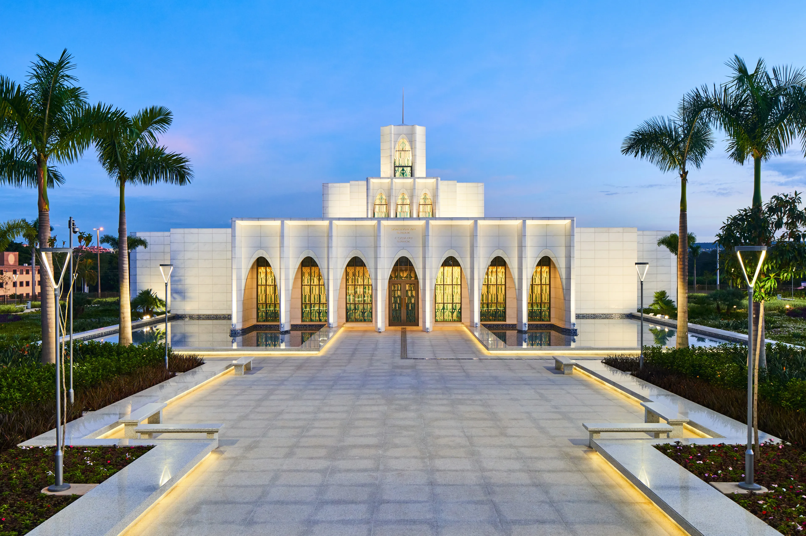
Brasilia temple
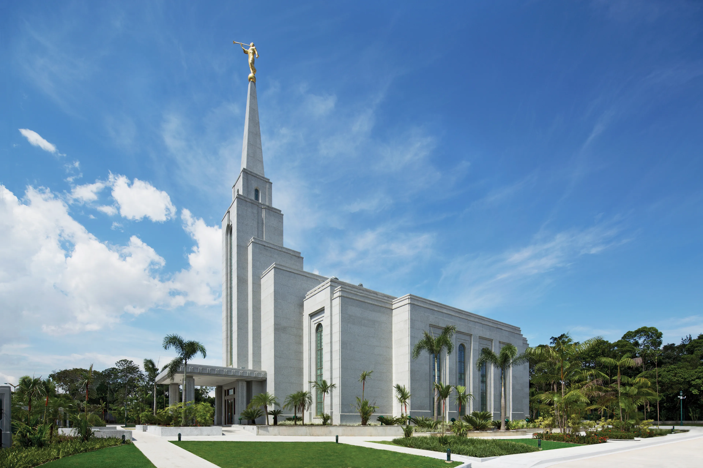
Manaus temple
Porto Alegre temple
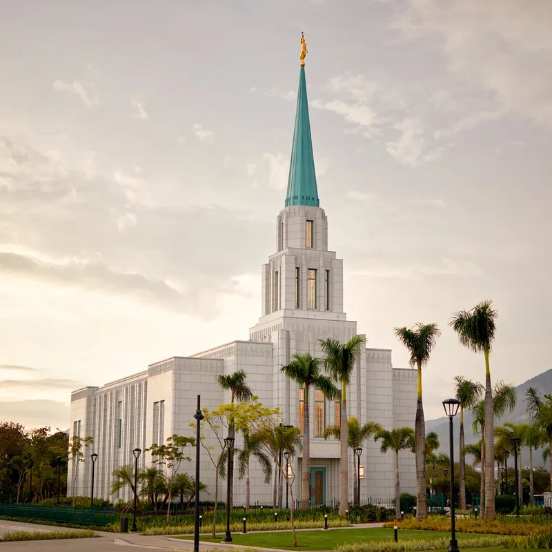
Rio de Janeiro temple
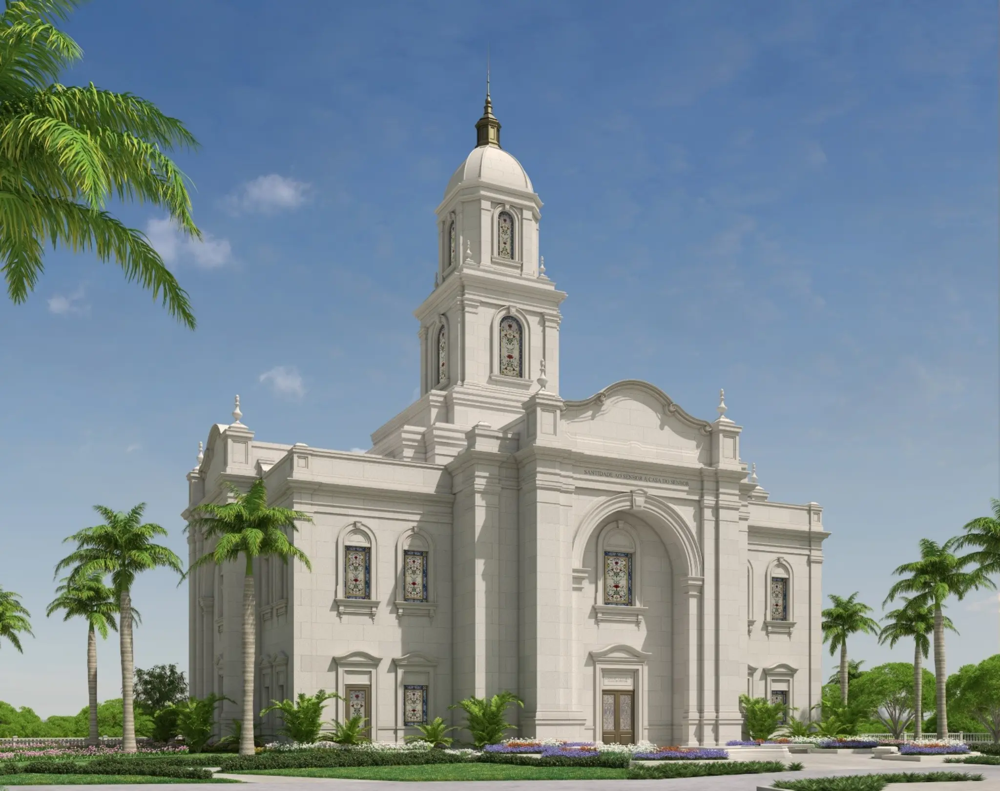
Salvador temple
 Belo Horizonte temple
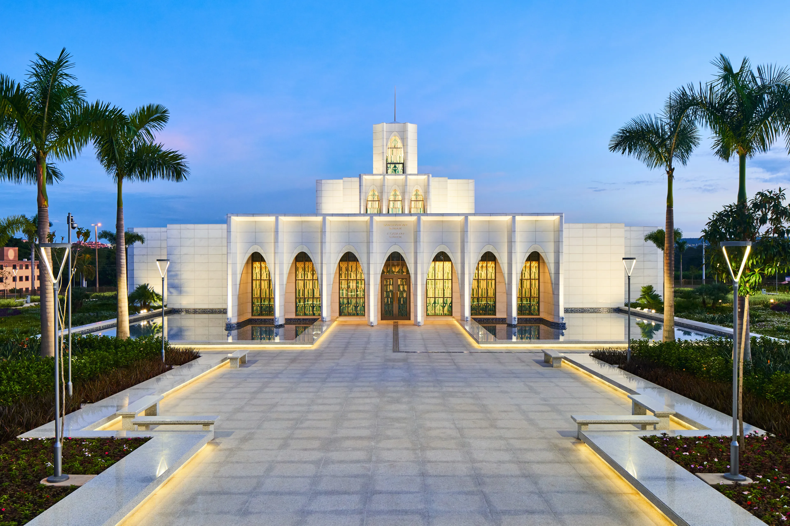
Brasilia temple
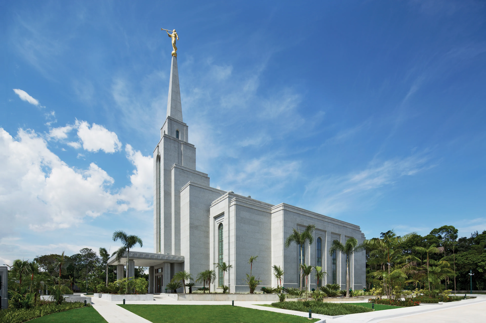
Manaus temple
Belo Horizonte temple
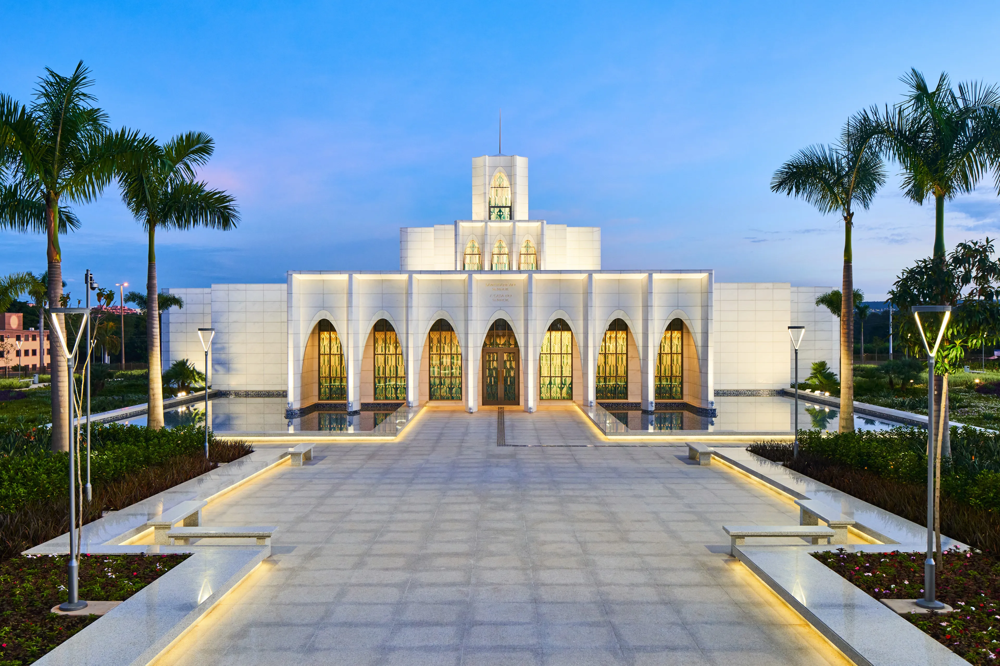
Brasilia temple
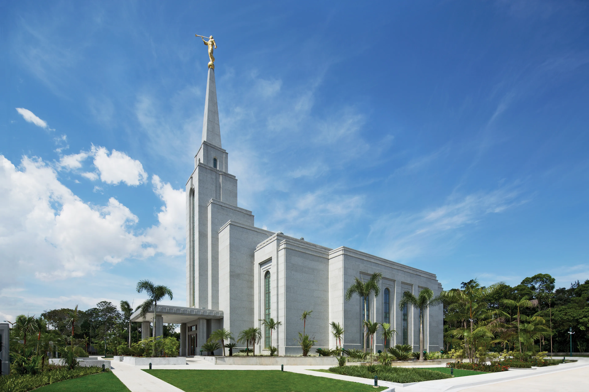
Manaus temple
 Porto Alegre temple
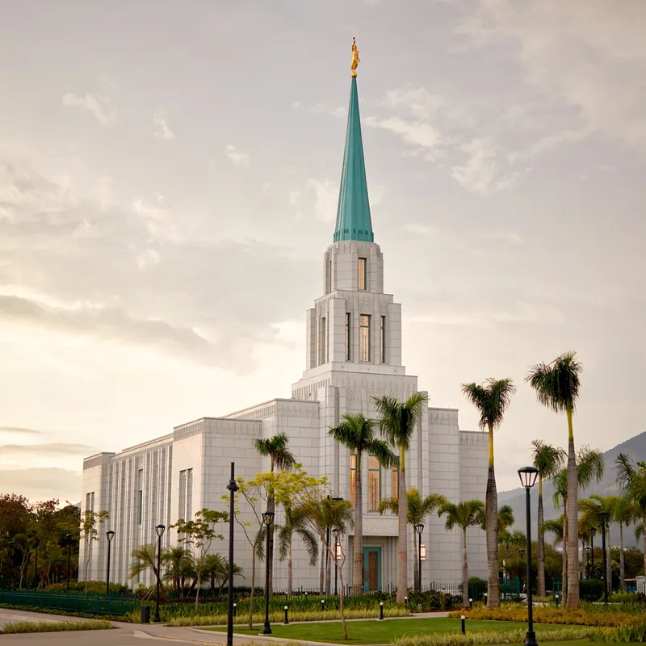
Rio de Janeiro temple
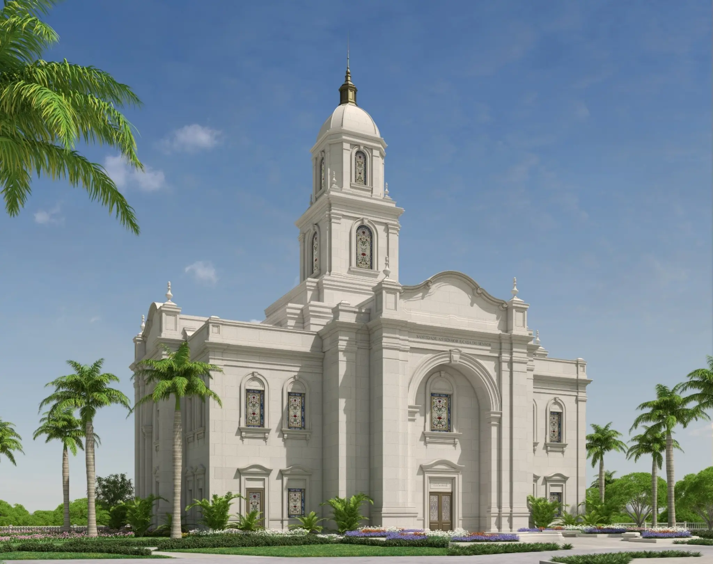
Salvador temple
Porto Alegre temple
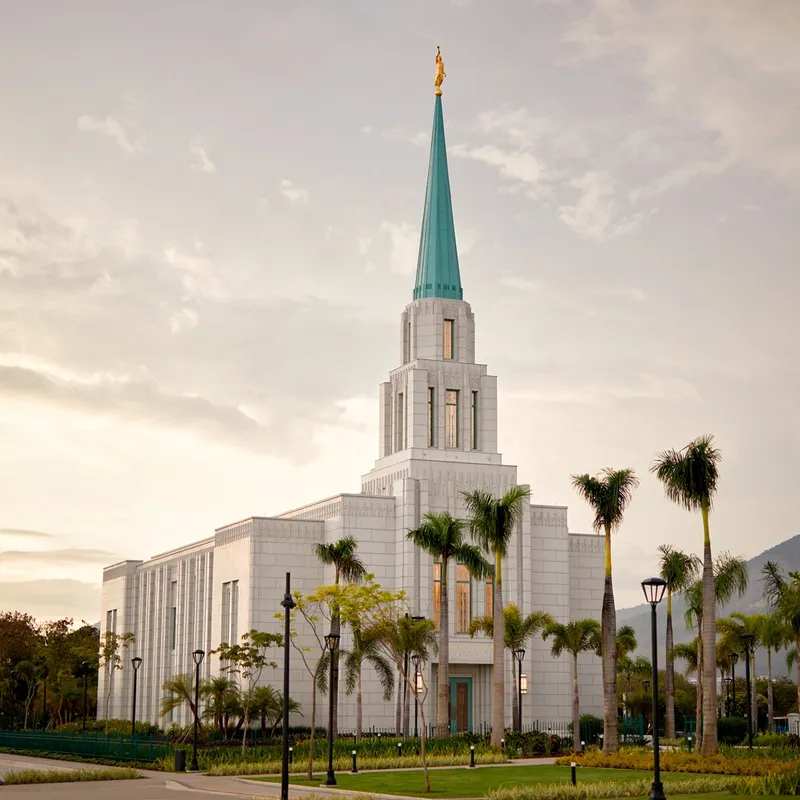
Rio de Janeiro temple
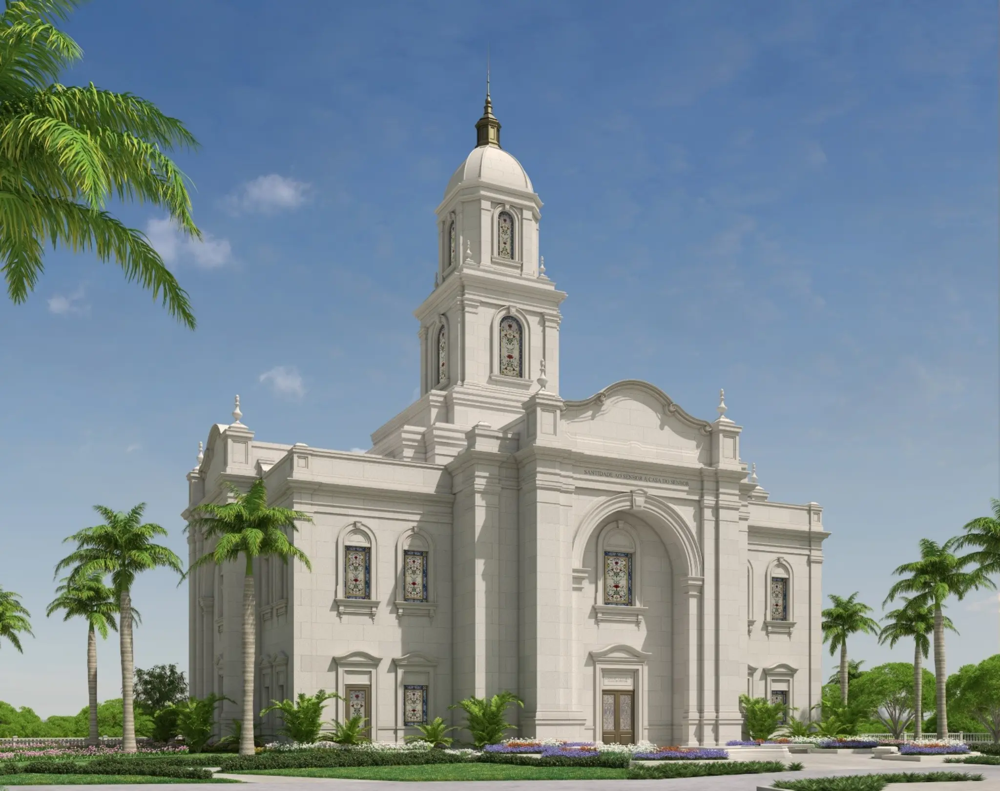
Salvador temple